地政学
リュブリャナはアルプス、アドリア海、パンノニア平原、バルカン半島の接点です。EU、NATO、旧ユーゴ圏、イタリア、オーストリア、クロアチアとの距離が近く、小国外交と物流の判断が日常にも響きます。交通と外交の要所です。
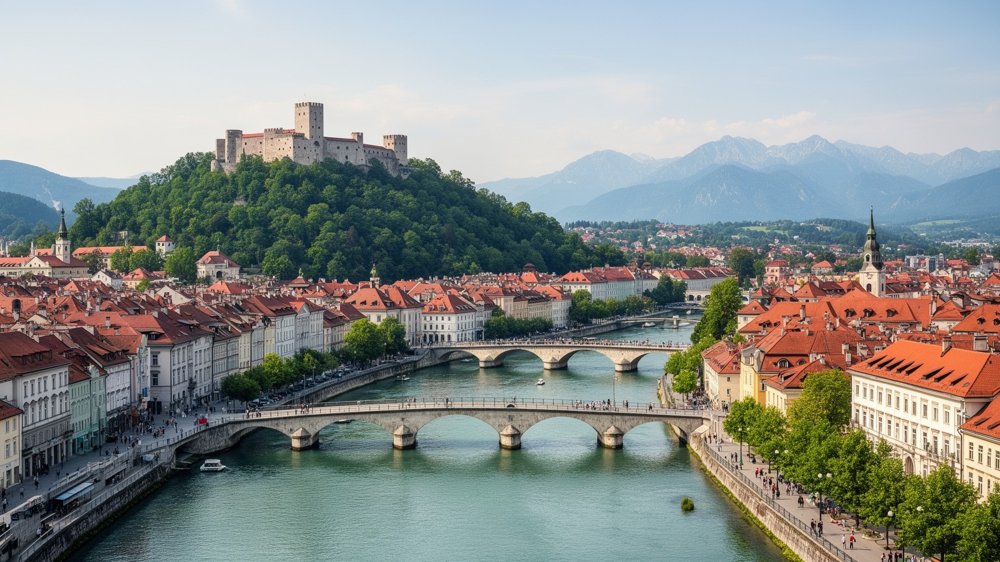
🇸🇮 スロベニア共和国 / 首都 / World City Atlas
アルプス、アドリア海、パンノニア平原、バルカン半島の交点にある小さな首都です。川辺の旧市街、大学、EU加盟国の官庁、研究産業、プレチュニク建築、環境都市政策が近い距離で重なります。
都市の骨格
リュブリャナはリュブリャニツァ川の曲線、城の丘、歩行者化された旧市街、大学と官庁、鉄道と高速道路の結節点でできています。小さな規模だからこそ、国家機能、学生、観光客、日々の買い物が同じ中心部を共有します。
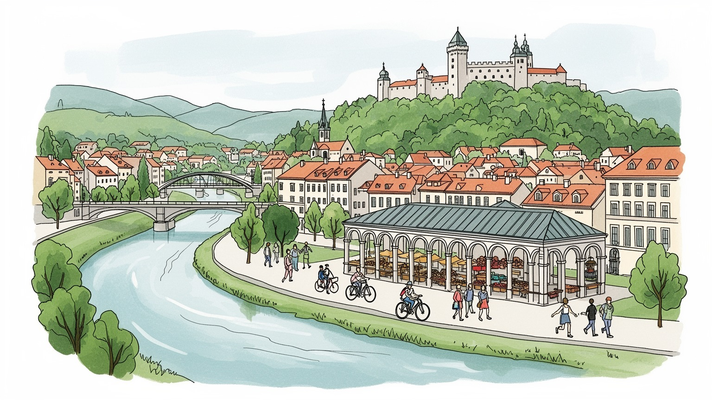
リュブリャナはアルプス、アドリア海、パンノニア平原、バルカン半島の接点です。EU、NATO、旧ユーゴ圏、イタリア、オーストリア、クロアチアとの距離が近く、小国外交と物流の判断が日常にも響きます。交通と外交の要所です。
行政、大学、研究機関、製薬、情報技術、金融、観光、物流が雇用を作ります。高所得の専門職と市場の小商い、配達、飲食、介護が並び、住宅費、人材不足、通勤、若者の雇用が都市経済を揺らします。教育も要です。
カトリックの暦、世俗的な大学文化、旧ユーゴの記憶、出版、演劇、音楽、カフェが重なります。プレチュニクの橋と市場、聖堂、ラジオ、SNS、夜のライブが、首都の文化と祝祭の色を広場で鮮やかに今も濃く見せます。
中心部は歩行者と自転車に開かれ、学生、通勤者、家族、旅行者が川沿いを行き交います。城、中央市場、三本橋に加え、家賃、子どもの通学、高齢者の移動、買い物、洪水、冬の霧も生活の質を今も強く左右します。
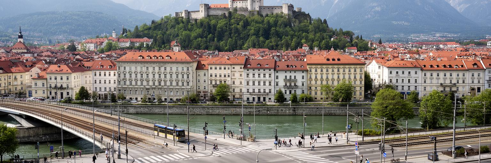
リュブリャナは、都市の規模だけを見ると穏やかな地方首都に見えます。しかし地図を広げると、アルプスの南縁、アドリア海の背後、パンノニア平原への入口、バルカン半島北西部が交わる場所にあります。北へ向かえばオーストリアとドイツ圏、西へ向かえばイタリアとトリエステ、南と東にはクロアチア、旧ユーゴ圏、バルカンの交通路が延びます。鉄道、高速道路、空港、港湾連絡は、人口三十万人規模の首都に国際的な重みを与えています。スロベニアはEU、ユーロ圏、シェンゲン圏、NATOに属し、リュブリャナの官庁や企業は小国でありながら複数の地域秩序を調整します。旧市街の川辺を歩くだけでは、その地政学は目立ちません。それでも物流会社、大学、外交機関、観光客、移住者の動きを見ると、都市が周辺世界を受け止めていることが分かります。リュブリャナの強さは巨大な市場を持つことではなく、近隣との距離が短く、制度と言語と交通をつなぎ替えられる点にあります。小さな首都という条件は弱さではなく、意思決定と日常が近いという特徴でもあります。川と城の景観の背後で、中央ヨーロッパ、地中海、南東ヨーロッパを結ぶ都市の役割が続いています。国境を越える移動が身近なため、首都の視野は国内だけに閉じません。隣国の景気や港湾の動きも、企業と家計の判断に静かに入ってきます。
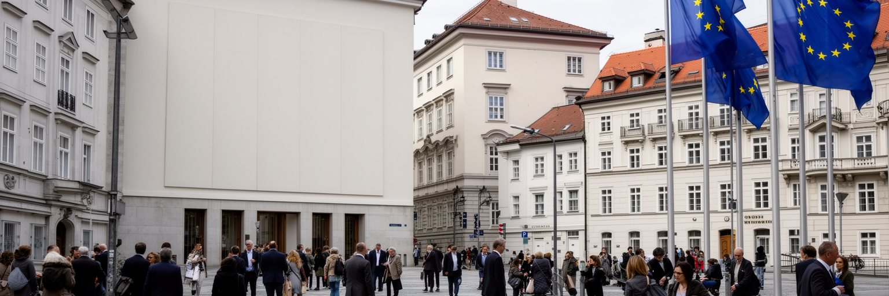
リュブリャナはスロベニアの議会、政府、裁判所、省庁、中央銀行、大使館、国際機関が集まる政治の中心です。旧ユーゴスラビアから独立した国家が、EUとユーロ圏の制度に入り、国境管理、エネルギー、安全保障、移民、農業、地域開発を調整する場でもあります。街の政治は大規模な官庁街というより、中心部に点在する公共機関、大学、報道機関、市民団体、カフェの討論で動きます。人口が少ない国では、国政の判断が地方自治、企業、大学、文化予算、住宅政策へ届く距離も短くなります。EU加盟国としてのリュブリャナは、ブリュッセルの規則を受け取るだけでなく、バルカン地域との関係、ウクライナ情勢、エネルギー転換、シェンゲン境界の実務を自国の条件に合わせて翻訳します。政治的な安定は高く見えますが、医療、年金、公共部門賃金、洪水復旧、住宅費、若者の流出は住民の不満にもなります。首都を読むには、欧州的な整った景観だけでなく、小国の財政と行政がどこまで生活を支えられるかを見る必要があります。リュブリャナでは、国家の象徴と日常の距離が近いです。その近さが、政治を抽象的な制度ではなく、バス、大学、病院、家賃、川辺の公共空間として感じさせます。政策の失敗も成功も、中心部の会話へ戻るのが早いです。小さな首都ほど、説明責任と信頼が都市の安定を左右します。
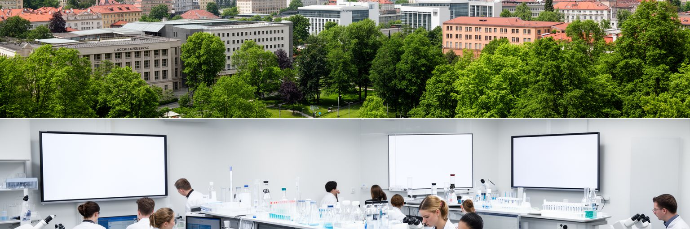
リュブリャナの経済は、首都機能だけで成り立っているわけではありません。大学、研究所、製薬、バイオテクノロジー、情報技術、金融、保険、設計、観光、物流、公共サービスが集まり、中央スロベニア地域は国内で最も所得と生産性の高い地域になっています。市内には学生、研究者、行政職員、専門職、観光業の労働者、配達員、小売店員が同時に働きます。高付加価値の仕事がある一方で、サービス労働の賃金、季節的な観光需要、若者の非正規雇用、外国人労働者の住まいは見えにくい重荷です。朝の市場にはチーズ、蜂蜜、野菜、花が並び、カフェの湯気と自転車のベルの音の横で、小さな商いが研究都市の日常を支えます。スロベニア全体では輸出型製造業が重要で、首都はその管理、研究、金融、政策、国際営業を支えます。港町コペル、工業都市、周辺自治体との分業も欠かせません。リュブリャナで働く人の多くは周辺から通勤し、毎日の交通が都市圏の実際の形を作ります。経済力が強い都市ほど、住宅費やオフィス賃料が上がり、文化や小商いを中心部から押し出す危険もあります。研究都市としての競争力を保つには、大学と企業の連携だけでなく、手頃な住宅、保育、公共交通、外国人研究者の受け入れ、生活の質が必要です。専門職が増えるほど、清掃、介護、飲食、配送、宿泊の労働も欠かせません。都市の豊かさは、見えにくい仕事を含めて評価する必要があります。
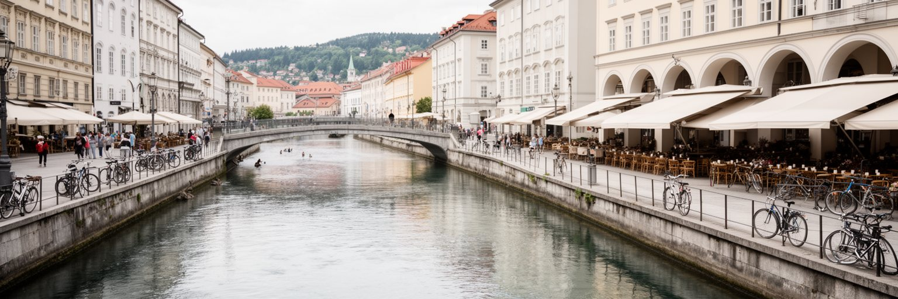
リュブリャナの中心を理解するには、リュブリャニツァ川の縁を歩くのが早いです。川は旧市街を柔らかく曲がり、橋、市場、カフェ、広場、並木、テラス席をつないでいます。三本橋、竜の橋、肉屋の橋、中央市場、川沿いのアーケードは、通過するためのインフラであると同時に、都市の居場所です。中心部の歩行者化と自転車利用の促進は、車を締め出すだけでなく、観光客、学生、家族、高齢者が同じ空間を使えるようにする都市政策でもあります。朝はパンと果物の匂い、昼は市場の呼び声、夕方は川面の湿気、夜はテラス席の会話と演奏が護岸に重なります。川辺が成功しているため、リュブリャナは「小さく歩ける首都」という印象を持たれますが、その裏側には配送、駐車、公共交通、住宅地の交通負担をどう分けるかという実務があります。川は美しい景観である一方、洪水と湿地の記憶も持ちます。南側のリュブリャナ湿原、雨、冬の霧、排水は、都市デザインを自然条件から切り離せないものにしています。良い公共空間は、舗装やベンチだけで決まりません。市場で買い物をする住民、大学へ向かう学生、観光客、配達員、清掃員、カフェで働く人が無理なく共存できるかで評価されます。リュブリャナの川辺は、観光の舞台でありながら、日常の速度を守る場所でもあります。時間ごとに使い手が変わることが、川辺を都市の中心にしています。
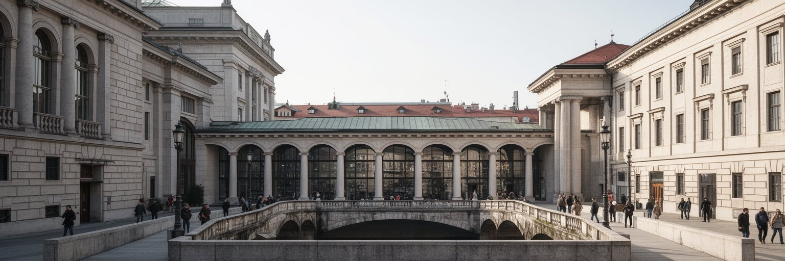
リュブリャナの都市像を語る時、建築家ヨジェ・プレチュニクの存在は欠かせません。彼は橋、川岸、市場、図書館、教会、墓地、広場を通じて、首都を人間の歩幅で読み直しました。古典的な柱や石の細部を使いながら、巨大な権威の建築ではなく、市民が歩き、買い物し、祈り、学ぶ空間を連続させた点に特徴があります。三本橋や中央市場は観光名所ですが、本来は川を渡り、食材を買い、雨を避け、友人と会うための生活の装置です。プレチュニクの作品群が世界遺産として評価される理由も、単独の美しい建物ではなく、都市全体を公共空間として再構成した思想にあります。リュブリャナでは、建築が絵葉書になるだけでなく、住民の動線に残っています。ただし、遺産として人気が高まるほど、保存、観光利用、店舗賃料、日常利用の調整が必要になります。建築を守るとは、石や柱を固定することだけではありません。市場が市場として働き、図書館が学びの場であり、橋が待ち合わせの場所であり続けることです。プレチュニクの都市は、装飾よりも関係の設計に強さがあります。小さな首都が大きく見えるのは、空間の一つ一つが人を滞在させ、街を記憶に残すからです。リュブリャナの遺産は、歩く時間の質として今も使われています。石材の手触り、柱の影、橋から見る水面は、観光名所である前に日常の細部です。使われ続けることで、建築は都市の記憶になります。
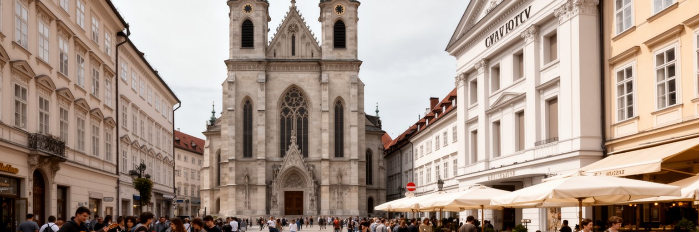
リュブリャナの文化は、カトリックの歴史、ハプスブルク期の都市文化、スロベニア語の出版と教育、旧ユーゴスラビアの記憶、現代の世俗的な学生文化が重なってできています。大聖堂や教会は礼拝、祝祭、音楽、結婚、葬儀の場であり、同時に旧市街の景観を形作る都市の節点です。劇場、オペラ、博物館、ギャラリー、大学、書店、カフェは、スロベニア語で考え、議論し、表現する首都の基盤になっています。人口規模が小さいため、文化人、研究者、行政、学生、市民団体の距離は近く、作品や政治的議論が街の会話に戻りやすいです。ラジオ・シュトゥデントのような学生メディア、SNS上の討論、メテルコヴァ周辺のライブやクラブは、夜の都市に批評性と遊びを与えます。一方で、小国の文化市場は限られ、若い表現者や研究者はウィーン、ベルリン、ザグレブ、ベオグラードなど外の都市ともつながります。宗教性は保守的な儀礼だけでなく、家族行事、墓地、季節の市場、合唱、リュブリャナ・フェスティバルや街頭劇の祝祭に現れます。世俗的な生活が広がっても、教会暦や祈りの場所は都市の記憶を支えています。多様化する社会では、イスラム系移民、正教、無宗教の人びとも首都の一部です。文化と信仰を観光の装飾としてではなく、言語、家族、教育、政治意識を結ぶ生活の層として見ると、リュブリャナの静かな複雑さが見えてきます。合唱や演劇、読書会、映画祭のような小さな集まりも重要です。
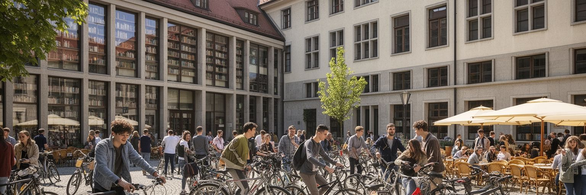
リュブリャナは学生の存在感が大きい都市です。リュブリャナ大学を中心に、図書館、研究室、寮、カフェ、書店、劇場、音楽イベントが若い人口を中心部に引き寄せます。学生は都市に夜の活動、議論、アルバイト、シェア住居、自転車移動、文化的な実験をもたらします。小さな首都では、大学の規模が街全体の雰囲気に直接影響します。医学、工学、自然科学、人文社会、芸術、経済、法学の教育は、国家の専門人材を育てるだけでなく、企業、行政、研究機関の人材循環を支えます。外国人学生や研究者も増え、英語での授業や国際共同研究が都市を外へ開いています。一方で、学生生活は必ずしも余裕に満ちているわけではありません。家賃の上昇、短期賃貸の拡大、アルバイトの条件、奨学金、地方出身者の通学、若者の海外就職は大きな論点です。大学都市としての魅力を保つには、キャンパスの設備だけでなく、安い食事、寮、公共交通、文化施設、自由に集まれる場所が必要です。学生割引の食堂、川辺の勉強会、バスケットボールやサッカーの試合、深夜のライブは、学びを教室の外へ広げます。学生が中心部から追い出されると、都市は観光客と高所得者のためだけの舞台になりかねません。リュブリャナの知の力は、研究成果だけでなく、若者が街で暮らし、失敗し、議論し、仕事へ進む過程から生まれます。研究室の成果が企業や行政へ移り、学生の活動が文化イベントへ広がる循環もあります。若い声が残ることで、街は保守的な遺産都市に閉じません。
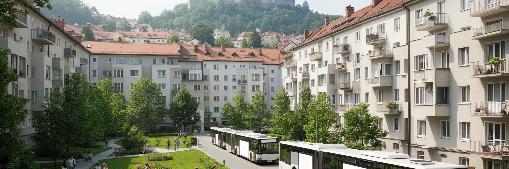
リュブリャナは、歩きやすく緑が多い住みやすい首都として語られます。中心部の歩行者空間、公園、川辺、自転車、公共交通、近い自然は、日常の質を高めています。しかし、その評価が高まるほど住宅費は重くなります。旧市街や中心部では観光向け短期賃貸、改修、投資需要が家賃を押し上げ、学生、若い家族、低賃金のサービス労働者には負担になります。郊外や周辺自治体へ住まいを求める人が増えると、通勤交通、駐車、道路混雑、公共交通の頻度が生活の条件になります。社会主義期の集合住宅、新しい分譲住宅、郊外の一戸建て、歴史的建物の改修が混在し、世代や所得によって住まい方が分かれます。学校へ向かう子ども、ベンチで休む高齢者、犬を連れた住民、雨上がりの土の匂いは、住宅地の評価を数字以上に具体化します。スロベニアでは住宅所有への志向が強い一方、若者の独立や転職には賃貸市場の柔軟さも必要です。リュブリャナの生活条件は、治安や清潔さだけでは測れません。保育園、学校、医療、買い物、冬の暖房、夏の暑さ、洪水リスク、公共空間の混雑が、住民の評価を決めます。観光客に魅力的な中心部を保ちながら、そこで働く人も暮らせる都市であり続けることが重要です。住みやすさはブランドではなく、毎月の家計と移動時間、近所の支え、公共サービスの実感で決まります。公営住宅、空き家活用、通勤圏の交通整備を組み合わせなければ、中心部の魅力は社会的な偏りを強めます。
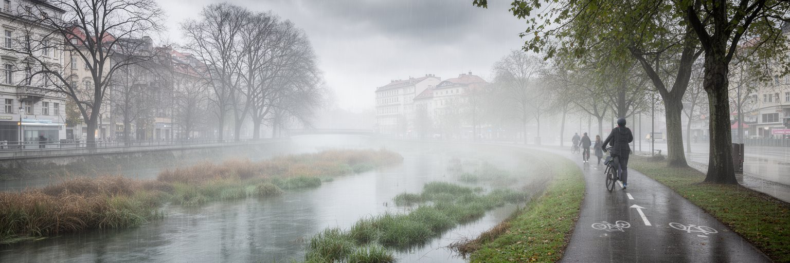
リュブリャナは環境政策の成功例として紹介されることが多い都市です。中心部の歩行者化、自転車利用、公共交通、廃棄物管理、緑地、川辺の整備は、首都を人の尺度へ近づけました。大都市のような圧倒的な交通量がないことも利点ですが、政策として中心部の車依存を減らしたことは都市の印象を大きく変えています。一方で、環境都市という評価は完成形ではありません。リュブリャナ盆地では冬に霧や大気の滞留が起こり、暖房や交通由来の空気質が問題になります。南のリュブリャナ湿原と川の流域は、洪水、排水、生物多様性、土地利用の調整を必要とします。気候変動で豪雨や暑熱が強まれば、低地の市街地、地下施設、道路、住宅、観光空間は影響を受けます。緑の都市を名乗るなら、中心部の美しい歩道だけでなく、郊外住宅地、工業地、通勤圏、低所得世帯にも環境改善が届く必要があります。断熱、再生可能エネルギー、公共交通の接続、雨水管理、木陰、学校周辺の安全は、すべて生活に関わります。リュブリャナの環境政策は、観光向けのきれいなイメージではなく、都市が水、空気、移動、廃棄物をどう扱うかの実践として見るべきです。川辺の気持ちよさを守るには、上流から下流までの流域管理と日々の維持管理が必要です。緑の評価が高い都市ほど、見えない維持作業を軽く扱えません。清掃、植栽、排水点検、住民参加が環境都市の土台です。
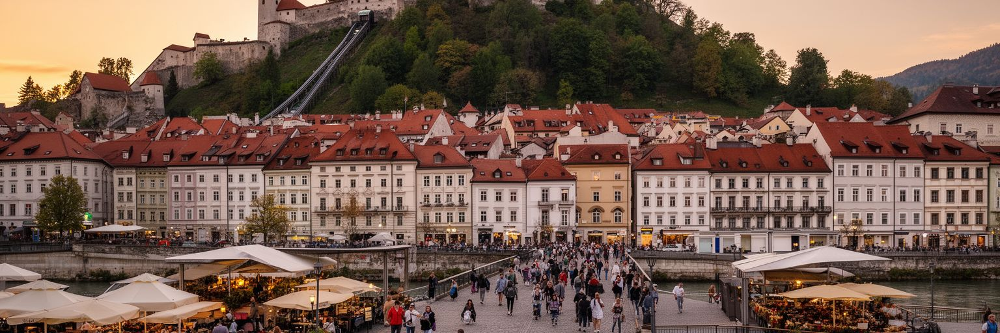
リュブリャナの観光は、巨大な記念碑を巡る旅ではなく、短い距離の中で街の層を読む旅です。城の丘から旧市街を見下ろし、川沿いを歩き、三本橋、中央市場、大聖堂、プレチュニクの柱廊、竜の橋、カフェ、書店、公園をつなぐと、首都の中心を数時間で体験できます。中央市場ではポティツァ、シュトゥルクリ、蜂蜜、チーズ、季節の果物を探せ、露店の声と教会の鐘が観光の記憶に匂いと音を与えます。そこに日帰りでブレッド湖、ポストイナ鍾乳洞、シュコツィアン洞窟、ピラン、アルプス方面へ向かう旅が加わり、リュブリャナはスロベニア観光の入口になります。観光の強みは安全で歩きやすく、景観が整い、英語も通じやすいことです。ただし、短期滞在者が増えると、旧市街の店舗構成、家賃、騒音、ゴミ、公共空間の混雑が住民生活に影響します。小さな中心部では、過度な観光化が進むと日常の買い物や学生文化が弱くなり、街が消費の舞台へ傾きます。観光を持続させるには、歴史建築の保存、地元商店、住民向けサービス、公共交通、周辺地域への分散が必要です。リュブリャナの魅力は、観光客だけのために作られたテーマパークではなく、住民が実際に使う橋、市場、川辺にあります。旅人がその日常に敬意を持って滞在できる時、旧市街の美しさはより深く伝わります。朝の市場で買われる野菜や花、夕方の通勤者の流れも観光景観の一部です。
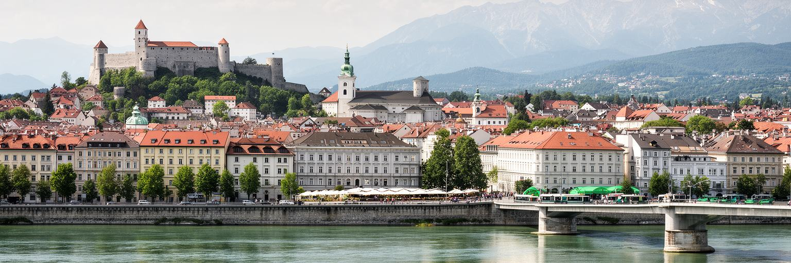
リュブリャナは、世界の巨大都市のような圧倒的な人口や金融力を持つ都市ではありません。それでも、現代ヨーロッパの都市を読むための多くの論点が凝縮しています。小国の首都機能、EU制度、旧ユーゴ圏との記憶、アルプスとアドリア海を結ぶ交通、大学と研究経済、歩行者中心の都市政策、文化遺産、カトリックと世俗文化、住宅費、観光、洪水と気候リスクが、歩いて回れる範囲に集まっています。リュブリャナの魅力は、きれいに整った旧市街だけではありません。市場で働く人、周辺から通勤する人、学生、研究者、行政職員、観光客、移住者が同じ川辺を使いながら、都市の密度を作っています。小さな都市では、政策の良し悪しがすぐ景観と生活に現れます。歩行者化が成功すれば中心部は豊かになりますが、住宅が高くなれば若者や労働者は遠ざかります。環境都市の評価が高まっても、洪水、冬の空気、郊外交通を無視すれば持続性は弱まります。リュブリャナを読むことは、都市の規模ではなく、結びつきの質を見ることです。川、橋、大学、官庁、市場、城、湿原、鉄道が近い距離で関係しているため、首都の選択が生活の細部まで届きます。その近さこそが、この都市の世界性です。静かな街並みの中に、境界地域の歴史、欧州統合、観光圧力、環境政策が同時に入っています。小さいからこそ、世界の変化が見えやすい首都です。